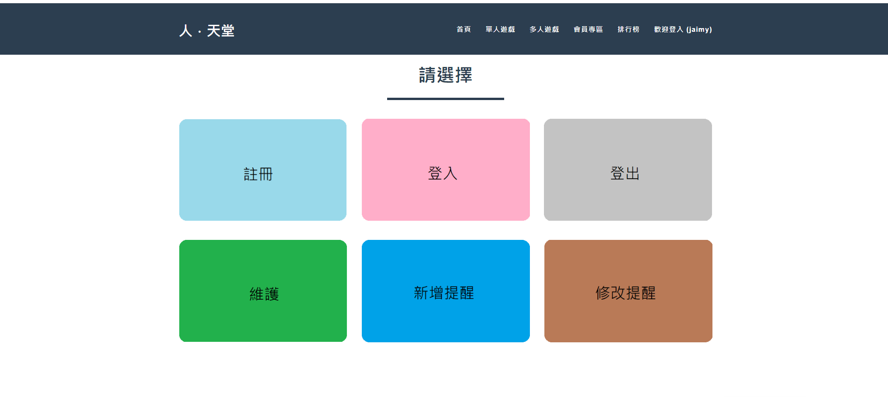
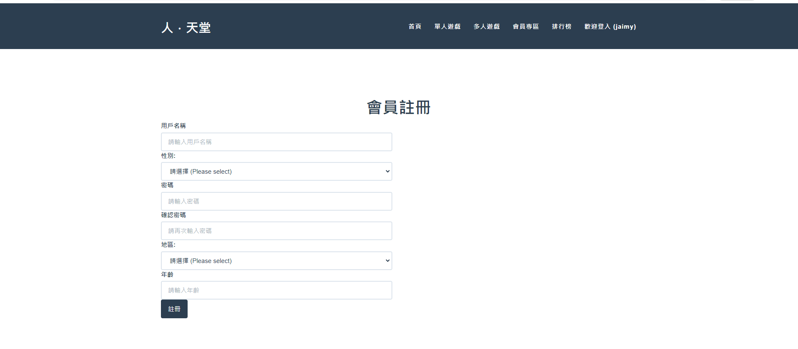
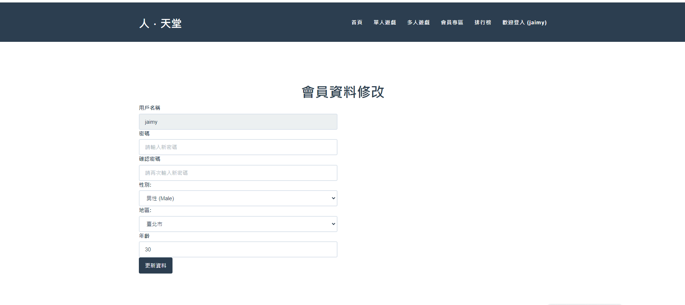
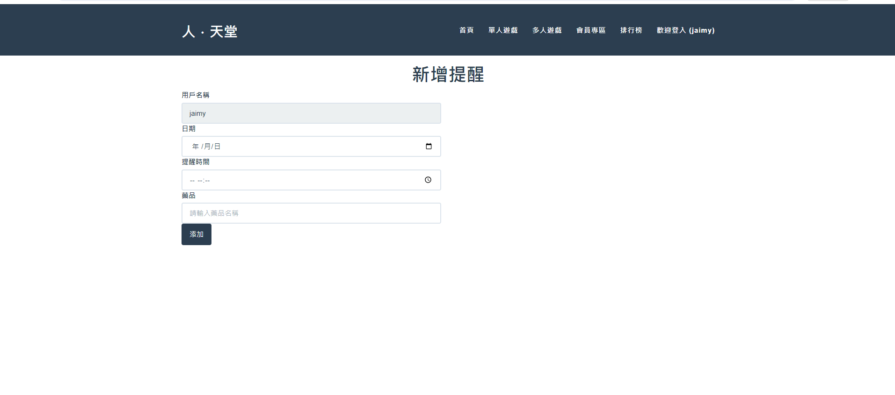
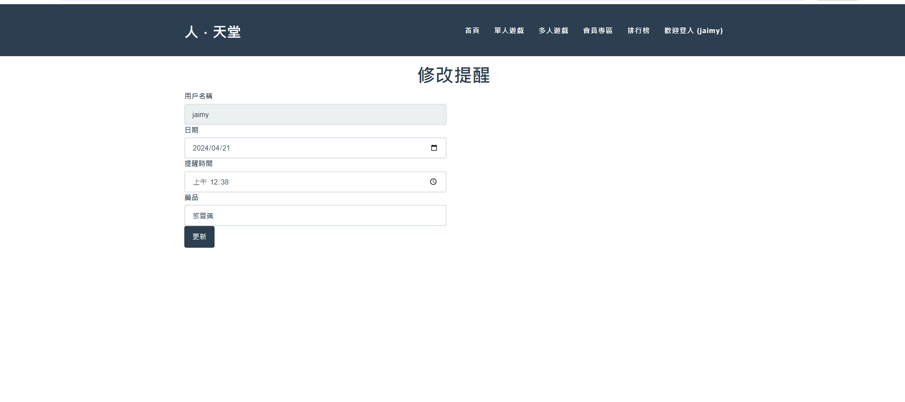
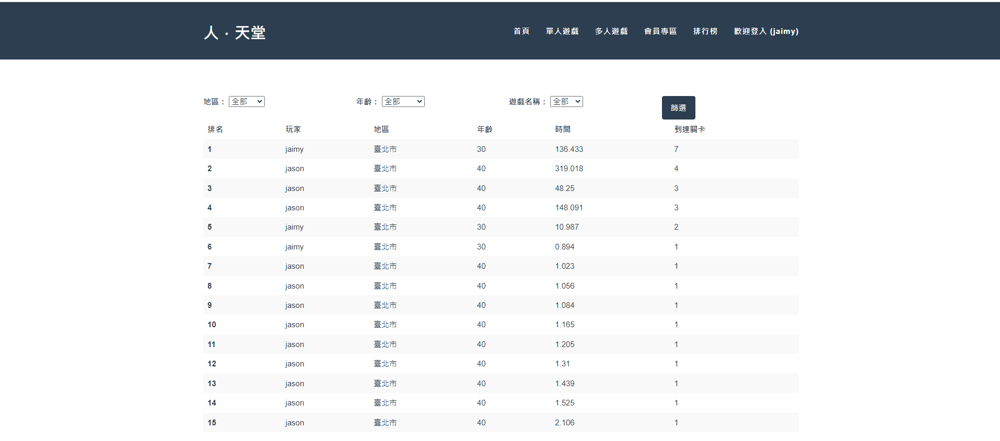
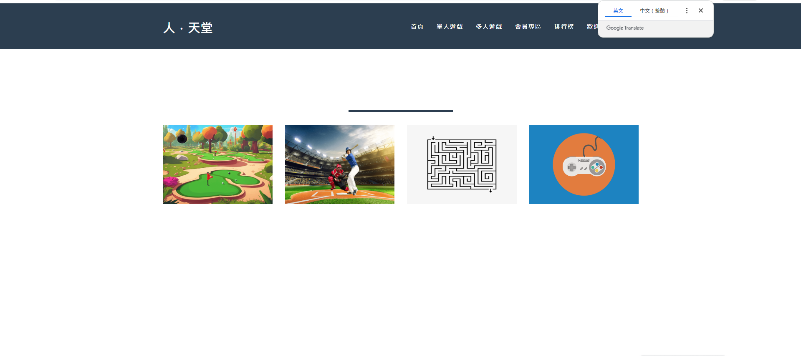
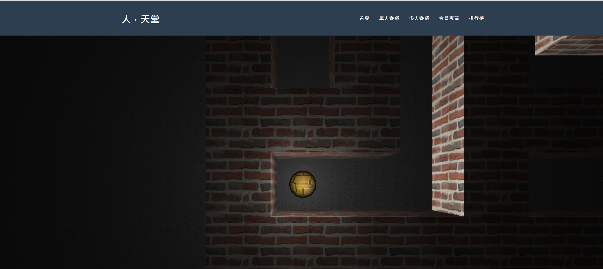
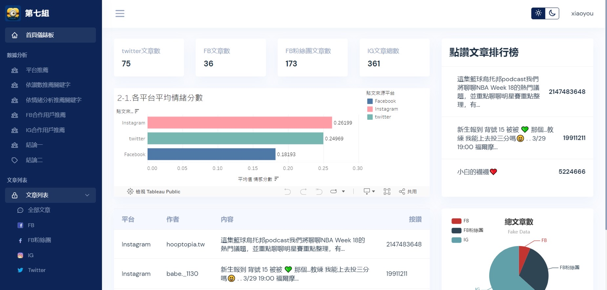
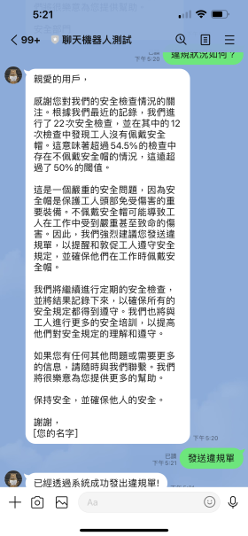

多軸感應器結合前端網頁遊戲
專案名稱： 人．天堂－Playyounger
專案緣起：隨著社會老齡化的加劇，我們意識到許多老年人面臨著健康問題和社交孤立的困境。許多長者因為缺乏適合的運動方式和社交機會，導致身心健康受到影響，生活品質下降。因此此產品平台旨在提供多元化的運動方式和社交機會，同時關注使用者的健康狀況
2024 ESG與生成式AI的創新應用實務研討會：
專案QR CODE:
專案前台畫面展示:








專案後台畫面展示:
關鍵技術
-
Web應用和數據即時互動
套件 : Flask, Flask-Login, WebSocket
-
用戶認證與狀態管理
套件 : Flask-Login, json
-
後端資料處理與圖表呈現
套件 : PyMySQL, Pyecharts
-
GAI排程和時間管理
套件 : google-generativeai, APScheduler, schedule
社群平台分析
專案緣起：近年來，社群平台已成為許多廣告主進行行銷的重要渠道之一。知名的社群平台，擁有龐大的
用戶群，各自具有獨特的特色和使用者群。因此針對這三個平台的資料進行分析，對於了解用戶行為、趨
勢以及投放廣告的效果具有重要意義。
社群平台分析 | FB vs. IG vs. Twitter：
專案QR CODE:

關鍵技術
-
爬蟲技術
套件 : Selenium, BeautifulSoup
-
數據分析與視覺化
套件 : Pyecharts, Tableau
-
架設專案網站平台
套件 : Flask
-
網站資料透過資料庫即時顯示
套件 : Flask, PyMySQL, MySQL
數位孿生
通過整合物理回饋資料，並輔以人工智慧、機器學習和軟體分析，在資訊化平台內建立一個數位化類比。這個類比會根據回饋，隨著物理實體的變化而自動做出相應的變化。

關鍵技術
-
與 Line 官方帳戶整合並廣播訊息
套件 : Flask, LinbotAPI
-
圖像識別與預測
套件 : Keras, PIL, NumPy